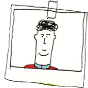
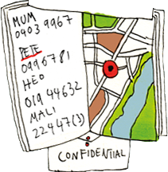
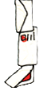
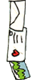
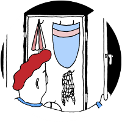
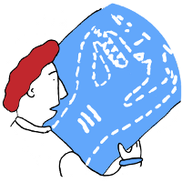
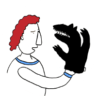

What traces do you leave behind when you are online? Use
this website to find out, and to do something to better
manage your traces.
Keeping up with online privacy is no easy task.




Start here to explore your digital traces:

Digital shadow?
Every time we interact by using technologies, our digital
shadows get bigger. Go on a visual journey to learn about
our digital shadows.

Trace my shadow
This interactive visualisation helps you to find out
how your online activities can endanger your privacy. It
also provides tips on what you can do to manage it better.

Shadow tracer's kit
A carefully selected set of tools that help you learn more
about your digital traces and what you can do to reduce
them.
The data industry
This interactive visualisation helps you to find out
how your online activities can endanger your privacy. It
also provides tips on what you can do to manage it better.
Not sure where to start? Try these first.
Privacy Badger
Tool
Privacy Badger is a browser add-on that stops advertisers and other third-party trackers from secretly tracking where you go and what pages you look at on the web.
Click&Clean
Tool
Click&Clean is a Firefox extension, which helps you to clear your internet history and protect your privacy in 1-click without any prompts.

HTTPS Everywhere
Tool
HTTPS everywhere is a browser add-on that encrypts your browser communication with all websites that support https encryption
Some of our recent writing:
What's up with crypto in WhatsApp?
Feature
WhatsApp implemented end-to-end encrytpion last month, protecting their users from third parties spying on their content. However, what does the protection of content by a commercial compan...
The False Dichotomy of Better and Worse Spies
Feature
Would you rather be spied on by the Americans...than, say, the Chinese? This blog challenges the dichotomy of "better" and "worse" spies.
Blog series: Why shrugging at the Snowden revelations is a bad idea
Feature
Read our blog series on why we think shrugging at the Snowden revelations is a bad idea.
We're selling ourselves and we think it's cool
Feature
The day after Facebook bought Whatsapp, 500,000 people signed up to Telegram. With three out of four Europeans worried about how companies, including search engines and social networks, use...